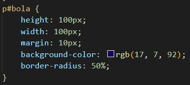

Para deixarmos as vértices arredondadas, utilizamos a tag border-radius e a quantidade de pixels necessárias de acordo com o arredondamento.
Podemos usar um macete em configurações para termos um formato de bola como no exemplo abaixo, neste caso utilizamos da seguinte forma:
